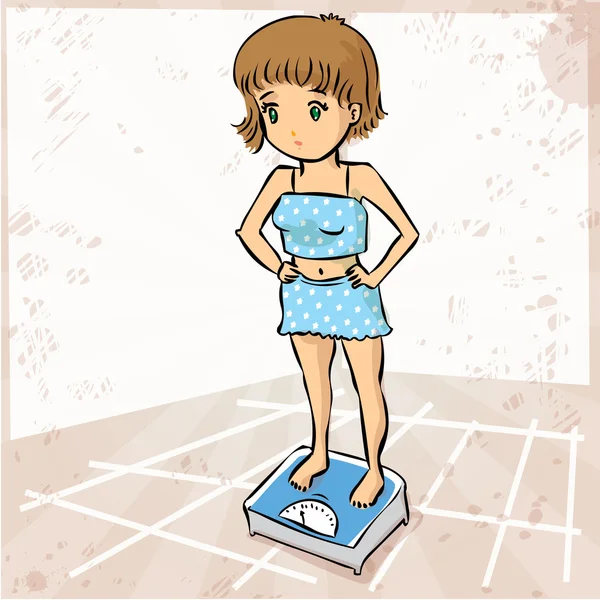
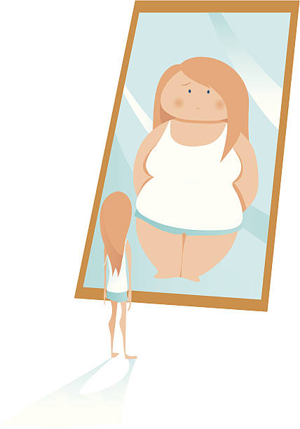

La anorexia es un trastorno de alimentación que hace que las personas pesen menos de lo que se considera saludable para su edad y estatura, generalmente por una pérdida excesiva de peso. Las personas con este trastorno pueden tener un miedo intenso a aumentar de peso, incluso cuando están con peso insuficiente. Es posible que hagan dietas o ejercicio en forma excesiva o que utilicen otros métodos para bajar de peso
La anorexia es un trastorno alimenticio caracterizado por la restricción extrema de la ingesta de alimentos.
Qué es La bulimia nerviosa es un trastorno de la conducta alimentaria (TCA) que se caracteriza porque las personas que la padecen suelen darse atracones recurrentes en los que ingieren grandes cantidades de comida en un espacio corto de tiempo
La bulimia implica episodios de ingesta excesiva seguidos de conductas para evitar el aumento de peso.
El sobrepeso es un aumento continuo del peso corporal por encima de ciertos patrones saludables, que puede poner en riesgo la salud. Conoce sus posibles causas, consecuencias y cómo se diferencia de la obesidad, un extremo grave del sobrepeso.
El sobrepeso se define como una acumulación anormal de grasa que puede afectar la salud.
Los trastornos alimenticios son enfermedades médicas graves que afectan tanto la salud física como la mental1. Incluyen problemas en la forma de pensar sobre la comida, la alimentación, el peso y la figura, así como en los comportamientos alimentarios1. Los tipos comunes de trastornos alimentarios incluyen2: Atracones de comida Bulimia nerviosa Anorexia nerviosa
Los trastornos alimenticios incluyen varios problemas relacionados con la alimentación y la percepción del cuerpo.